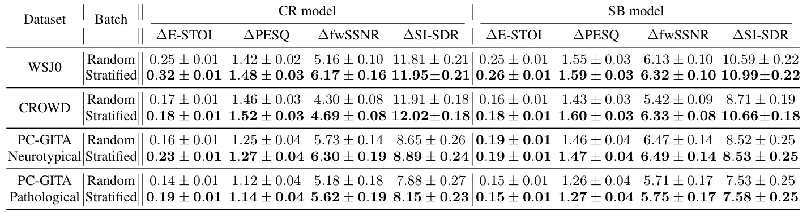
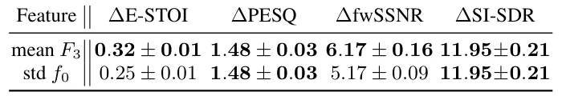
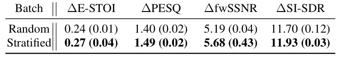

O Problema da Homogeneidade nos Lotes de Treinamento
O aprimoramento de fala (Speech Enhancement, SE) é uma tarefa crítica em processamento de sinais de áudio, cujo objetivo é restaurar a qualidade e a inteligibilidade da fala degradada por ruído, reverberação e outras distorções acústicas. Nos últimos anos, abordagens baseadas em aprendizado profundo dominaram este campo, tanto em modelos discriminativos, que mapeiam espectros degradados para limpos, quanto em modelos generativos, como difusão e flow matching.
Apesar do desempenho geral forte, esses modelos exibem variações significativas de performance dependendo das condições de entrada. Fatores como tipo de ruído, relação sinal-ruído (SNR) e características do locutor influenciam diretamente a dificuldade da tarefa. Estratégias existentes tentam mitigar isso através de arquiteturas complexas, como misturas de especialistas, ou condicionando o modelo a embeddings de locutor.
No entanto, estudos recentes indicam que mesmo controlando ruído, SNR e locutor, certas amostras de fala permanecem desafiadoras. Isso sugere que a fonte de variabilidade não está apenas nas condições externas, mas nas características intrínsecas do sinal de fala limpa. O problema central que este paper aborda é a forma como os dados são apresentados aos modelos durante o treinamento.
A Hipótese: Características Intrínsecas da Fala Limpa
Em trabalhos anteriores, os autores demonstraram que características da fala limpa, como a estrutura de formantes e a loudness (intensidade sonora), estão fortemente correlacionadas com o desempenho do aprimoramento. Especificamente, a frequência do terceiro formante (F3) mostrou-se um preditor robusto da dificuldade de aprimoramento.
A prática padrão no treinamento de redes neurais para SE é o uso de mini-lotes amostrados aleatoriamente. Embora essa abordagem forneça uma cobertura imparcial do conjunto de dados ao longo de muitas iterações, cada mini-lote individual pode ter uma composição acústica limitada. Se um lote contém predominantemente amostras com características acústicas semelhantes, as atualizações de gradiente serão dominadas por uma faixa restrita de dificuldade de aprimoramento.
Essa falta de diversidade intra-lote pode impedir o modelo de aprender a generalizar para diferentes tipos intrínsecos de fala. A hipótese deste trabalho é que controlar explicitamente a distribuição dessas características intrínsecas dentro de cada mini-lote pode melhorar significativamente o treinamento e o desempenho final do modelo de SE.
A Solução: Amostragem Estratificada por Características
Os autores propõem uma estratégia de amostragem de mini-lotes estratificada por características (feature-stratified mini-batch sampling). Esta é uma abordagem plug-and-play que não requer modificações na arquitetura do modelo de aprimoramento, na função de perda ou no otimizador. A única mudança ocorre na forma como os exemplos de treinamento são selecionados para formar os lotes.
O mecanismo funciona da seguinte maneira: para cada amostra de treinamento, extrai-se uma característica definida pelo usuário da fala limpa correspondente. Neste estudo, a característica principal utilizada é o valor médio da terceira frequência do formante (F3). Os dados de treinamento são então divididos em quantis com base no valor dessa característica.
Durante o treinamento, cada mini-lote é construído de forma a garantir uma representação igual de amostras de cada quantil. Por exemplo, se um lote tem tamanho 8 e usamos 4 quantis, o lote conterá exatamente 2 amostras do quantil mais baixo, 2 do segundo, 2 do terceiro e 2 do mais alto. Isso garante que, a cada passo de gradiente, o modelo seja exposto a uma diversidade máxima de características acústicas intrínsecas.
Detalhes da Implementação e Escolha de Features
É crucial notar que a característica usada para estratificação (como o F3) não é fornecida como entrada ao modelo de aprimoramento. Ela serve apenas para determinar a composição do lote. Isso significa que o modelo aprende a lidar com essa variabilidade intrinsecamente, sem um atalho baseado em metadados explícitos.
A escolha da característica para estratificação é fundamental. Os autores selecionaram o F3 médio porque, em estudos preliminares, ele mostrou uma correlação forte com a dificuldade de aprimoramento. Para validar essa escolha, os autores realizaram estudos de ablação comparando o uso do F3 com outras características, como o desvio padrão da frequência fundamental (f0), que mostrou pouca ou nenhuma correlação com o desempenho de SE.
Esta distinção é importante: nem qualquer característica acústica serve para melhorar o treinamento. A estratificação só traz benefícios se a característica escolhida for um bom proxy para a dificuldade intrínseca do sinal de fala que o modelo precisa aprender a restaurar.

Resultados Experimentais: Melhorias Consistentes
Os experimentos foram conduzidos em três conjuntos de dados: WSJ0 (inglês), CROWD (espanhol) e PC-GITA (espanhol, contendo fala patológica e neurotípica). Dois modelos de aprimoramento foram avaliados: CR (Convolutional Recurrent) e SB (Spectral Branch). A amostragem estratificada foi comparada contra a amostragem aleatória padrão.
Para o dataset WSJ0, a estratificação melhorou o desempenho de ambos os modelos, com ganhos mais pronunciados no modelo CR, especialmente nas métricas E-STOI e fwSSNR. No dataset CROWD, as melhorias foram mais evidentes no modelo SB, particularmente em PESQ, fwSSNR e SI-SDR.
Um ponto interessante surge no dataset PC-GITA, que inclui fala patológica. A estratificação melhorou consistentemente o modelo CR para ambos os grupos (neurotípico e patológico), indicando que a estratégia é benéfica também para casos de fala não padrão. O modelo SB, no entanto, não mostrou diferenças significativas entre as estratégias neste dataset específico.
Análise de Ablação: A Importância da Feature Correta
Para entender por que a estratificação funciona, os autores testaram o impacto de usar características diferentes para a estratificação. Na Tabela 2, comparamos o uso do F3 médio contra o desvio padrão da frequência fundamental (f0). O F3, sendo correlacionado com a dificuldade de SE, resultou em melhorias significativas. Já o f0, que não mostrou correlação forte com a dificuldade de aprimoramento, não trouxe benefícios comparáveis.
Este resultado valida a hipótese de que a estratificação não é mágica; ela depende da qualidade da característica escolhida. Se a característica não capturar a variabilidade relevante para a tarefa de aprimoramento, a estratificação não terá o mesmo impacto positivo. Isso sugere que pesquisas futuras podem explorar outras características intrínsecas da fala que possam ser ainda mais preditivas.

Robustez e Custo Computacional
Uma preocupação comum em métodos de amostragem é a estabilidade dos resultados. A Tabela 3 demonstra que as melhorias obtidas com a estratificação são robustas a variações estocásticas. Ao treinar com diferentes sementes aleatórias, o modelo treinado com amostragem estratificada manteve ganhos consistentes sobre o modelo de amostragem aleatória.
Além disso, um benefício chave desta abordagem é o baixo custo computacional. A estratégia requer praticamente nenhum custo adicional de computação, pois a extração da característica (F3) pode ser feita offline ou de forma leve durante o treinamento. Mais importante, ela deixa inalterados o modelo de aprimoramento, o objetivo de treinamento, os dados e o procedimento de otimização.

Limitações e Escopo
Apesar dos resultados promissores, é importante reconhecer as limitações deste trabalho. Os experimentos foram conduzidos principalmente em datasets de fala limpa e ruidosa em inglês e espanhol. A generalização para outros idiomas ou tipos de degradação acústica não explorados (como ruídos não estacionários complexos) não foi totalmente avaliada.
Além disso, a eficácia do método depende da disponibilidade de uma característica que seja um bom proxy para a dificuldade de aprimoramento. Para tarefas de SE onde as características intrínsecas da fala não são bem compreendidas ou não correlacionam com o erro do modelo, a aplicação dessa estratégia pode não trazer benefícios. A escolha da feature ainda requer algum conhecimento prévio ou validação empírica.
Conclusão
Este paper apresenta uma abordagem simples, porém eficaz, para melhorar o treinamento de sistemas de aprimoramento de fala. Ao estratificar os mini-lotes de treinamento com base em características intrínsecas da fala limpa, como o F3, os autores promovem uma diversidade acústica que leva a melhorias consistentes em várias métricas de qualidade.
A estratégia é complementar às abordagens existentes e pode ser facilmente integrada em pipelines de treinamento atuais. Os resultados sugerem que a composição dos lotes de treinamento é um fator negligenciado, mas crucial, para a robustez de modelos de SE. Para pesquisadores e engenheiros de áudio, esta técnica oferece um caminho de baixo custo para melhorar o desempenho dos modelos sem a necessidade de redesenho arquitetural.
O que fica
- Amostragem estratificada por características da fala limpa melhora a diversidade dos lotes de treinamento.
- A estratégia é plug-and-play, sem necessidade de alterar a arquitetura do modelo ou a função de perda.
- A eficácia depende da escolha da característica; F3 mostrou-se um bom proxy para a dificuldade de aprimoramento.
- Melhorias consistentes foram observadas em datasets de inglês e espanhol, incluindo fala patológica.
Paper original: Rethinking Batch Composition: Promoting Feature Diversity for Speech Enhancement
Comentários
Nenhum comentário ainda. Seja o primeiro.